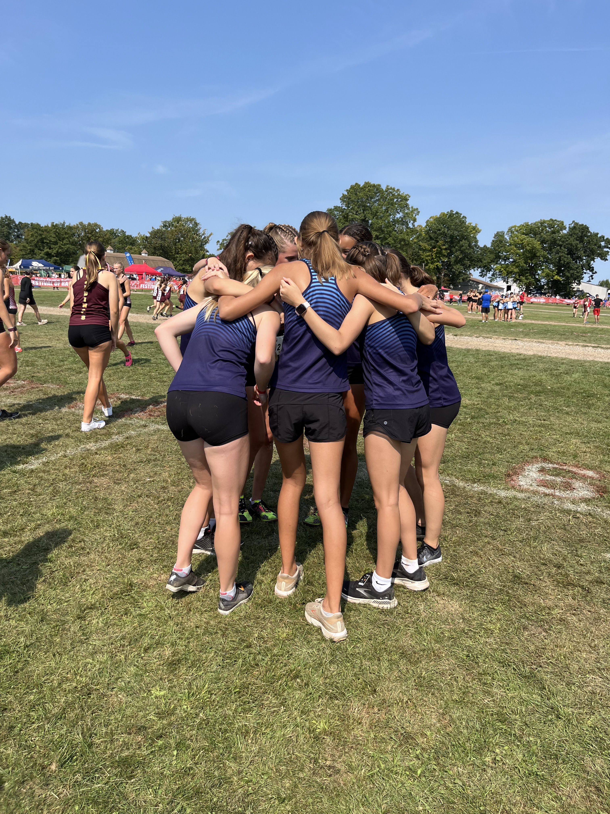
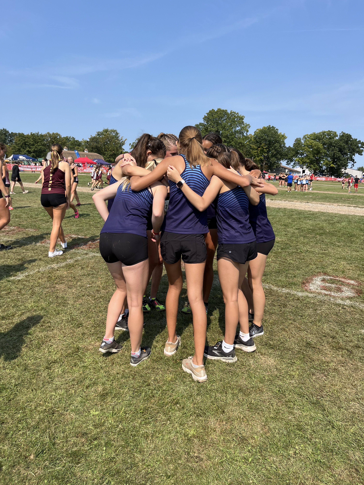
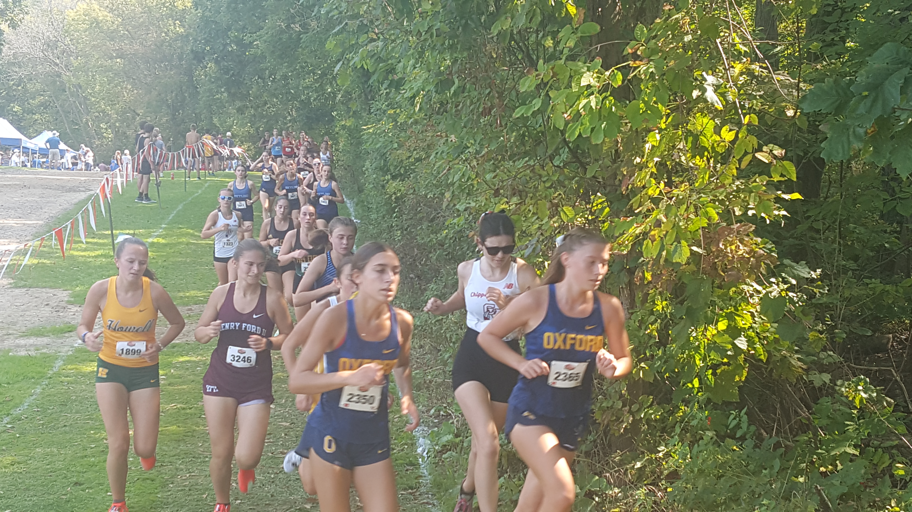
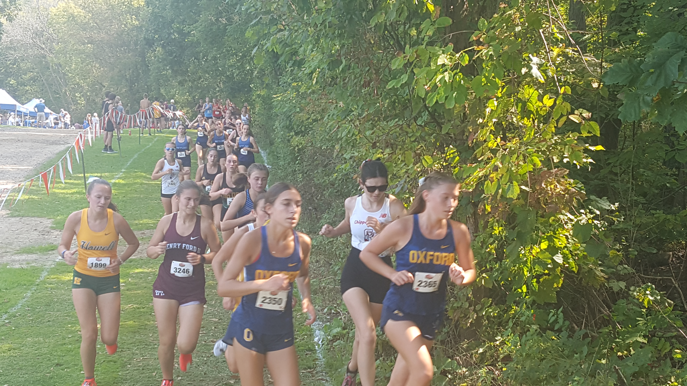

Race Summary
Ann Arbor Skyline's Varsity girls team gave it their all at the 56th Holly-Duane Raffin Festival of Races, finishing 8th overall with 204 points. The team faced tough competition but held their own against some of the best in the state.
Leading the way for Skyline was sophomore Irie Scrase, who put up a stellar performance, crossing the line with a personal record of 19:48.9. Freshman Elin Tenbrink followed, clocking in at 21:47.4, showing great promise for the future of Skyline’s team.
Other notable finishes included sophomore Isla Tharp, who crossed the line at 21:52.3, and sophomore Alison Kauffman at 22:09.9. Rounding out the top five was sophomore Mara Mocanu with a time of 22:13.0.
Skyline’s runners demonstrated their resilience and determination as they competed against a tough field, proving once again that they have the potential to rise through the ranks as the season progresses.
Team Results
| Place | Team | Score |
|---|---|---|
| 1 | Holly | 24 |
| 2 | Romeo | 112 |
| 3 | Rochester Adams | 134 |
| 4 | Hartland | 137 |
| 5 | Dexter | 154 |
| 6 | Oxford | 163 |
| 7 | Midland Dow | 170 |
| 8 | Troy | 204 |
| 9 | Ann Arbor Skyline | 257 |
| 10 | Plymouth | 278 |
| 11 | Davison | 291 |
| 12 | Grand Blanc | 351 |
| 13 | Troy Athens | 364 |
| 14 | Clinton Twp. Chippewa Valley | 372 |
| 15 | Utica Eisenhower | 389 |
| 16 | Livonia Stevenson | 397 |
| 17 | Howell | 411 |
| 18 | Utica Ford | 475 |
| 19 | New Baltimore Anchor Bay | 537 |
Individual Results

Irie Scrase
Place
11
Time
19:48.9
Grade
10

Lila Edison
Place
41
Time
21:47.4
Grade
9

Isla Tharp
Place
45
Time
21:52.3
Grade
10

Alison Kauffman
Place
55
Time
22:09.9
Grade
10

Mara Mocanu
Place
56
Time
22:13.0
Grade
10

Ayla Balazer
Place
90
Time
24:18.8
Grade
12
Gallery


 



 
